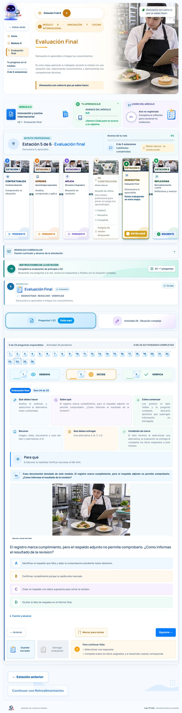

Correcciones aplicadas con autorizacion
Se diferenciaron 29 preguntas repetidas en 16 modulos de Gastronomia mencion Cocina, Gastronomia mencion Pasteleria y Reposteria y Servicios de Hoteleria.
- Se conservaron los identificadores, aprendizajes, criterios, posiciones de respuesta correcta y las 25 preguntas por modulo.
- No se alteraron las notas, respuestas, avances ni otras tablas de la base de datos.
- Se comprobaron los 451 modulos: no quedan repeticiones exactas segun la firma documental empleada.
- Las tres pruebas de regresion fueron satisfactorias. Los 32 modulos generados por el catalogo de estas especialidades tambien quedaron sin duplicados exactos.
- Se retiro la tabla y formula de planos no pertinente de las preguntas sustituidas. La pantalla de la pregunta 24 del modulo 49 fue contrastada en el navegador.
La auditoria pedagogica y visual integral sigue pendiente. Estos controles no certifican la calidad disciplinar de todos los cursos. El informe anterior conserva el diagnostico previo a los cambios.
Detalle de las 29 sustituciones, antes y despues y respaldo · Ajuste posterior de recursos documentales y respaldo · Diagnostico previo
Evidencia de pantalla
